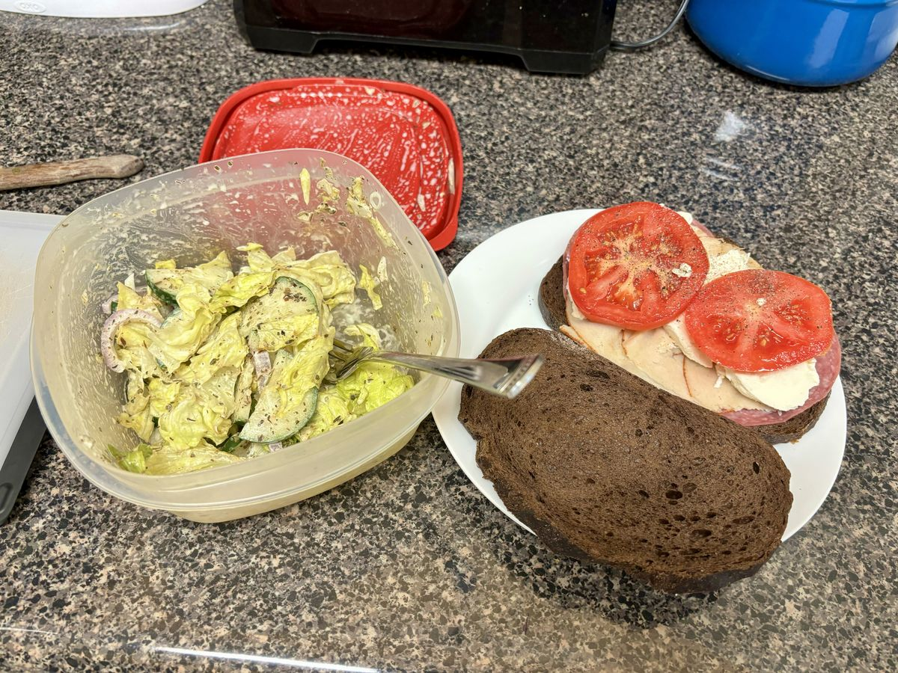

Based on https://cookingwithayeh.com/grinder-salad-viral-tiktok-recipe/#recipe
Personal rating: 4 / 5

1 Tbsp mayo
1 Tbsp red wine vinegar
1 tsp extra virgin olive oil
1 tsp oregano
1/2 tsp minced garlic or 1/4 tsp garlic powder
1/4 tsp salt
Iceberg lettuce, thinly sliced
Red or yellow onion, sliced
Cucumber, sliced
2-3 Banana peppers or pepperoncino sliced
Bread
Tomato, sliced with a dash of salt and pepper
Cheese, sliced
Deli meat or other protein